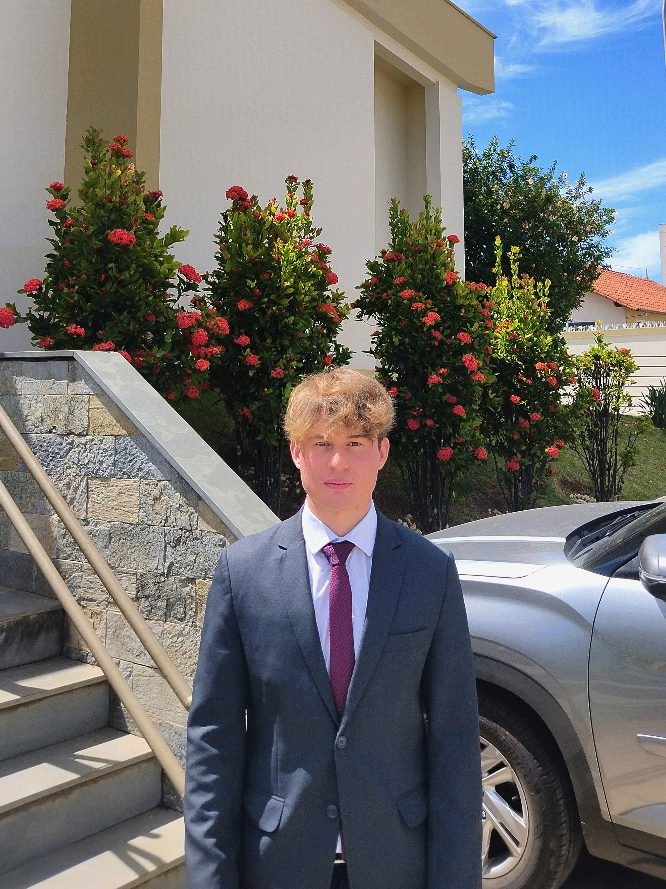

Matheus Pregnolato | WDD 130
Hello I'm Matheus, I am From Brazil and I'm a software development student. I'm 21 years old, I love to play soccer and travel to know new places and landscapes.
I was born in São Paulo state, in a small city called Votorantim. With only 2 years old I moved to Bahia, another state from Brazil, and then I moved many times and lived in many states of my country.
When I was 14 years old, I had started a computer technicall course, I wasn't good using a computer, but with this opportunitie, I learnt how to use a computer, how to use office library, to fix hardwares, use network cables and proramming in C.
I'm studying at BYU-I, and improving my skills and learning more than never, about programming. I'm excited to become a better developer and make many new projects.